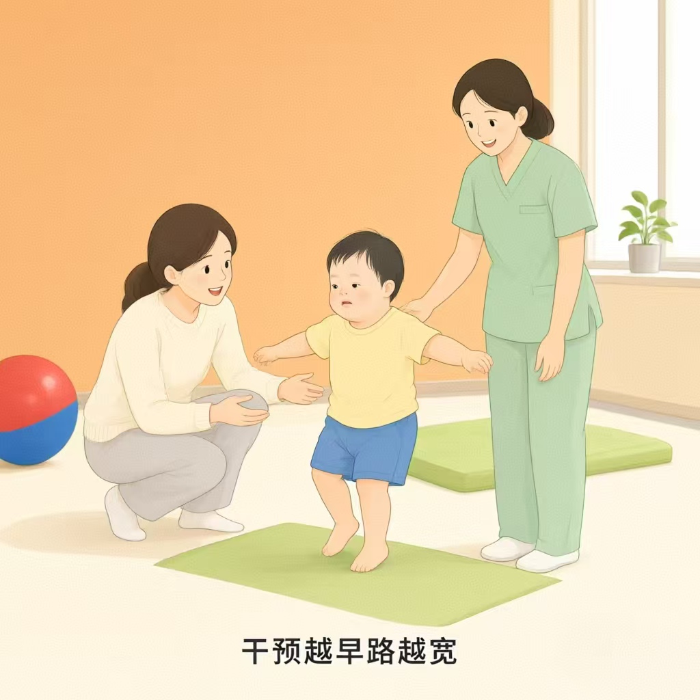
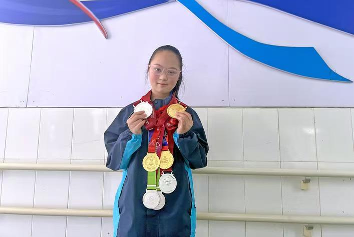
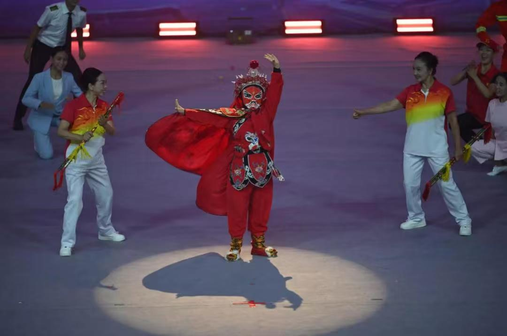
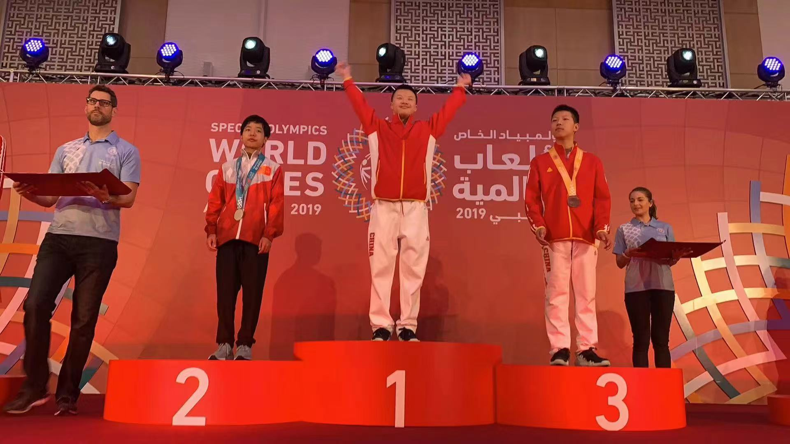
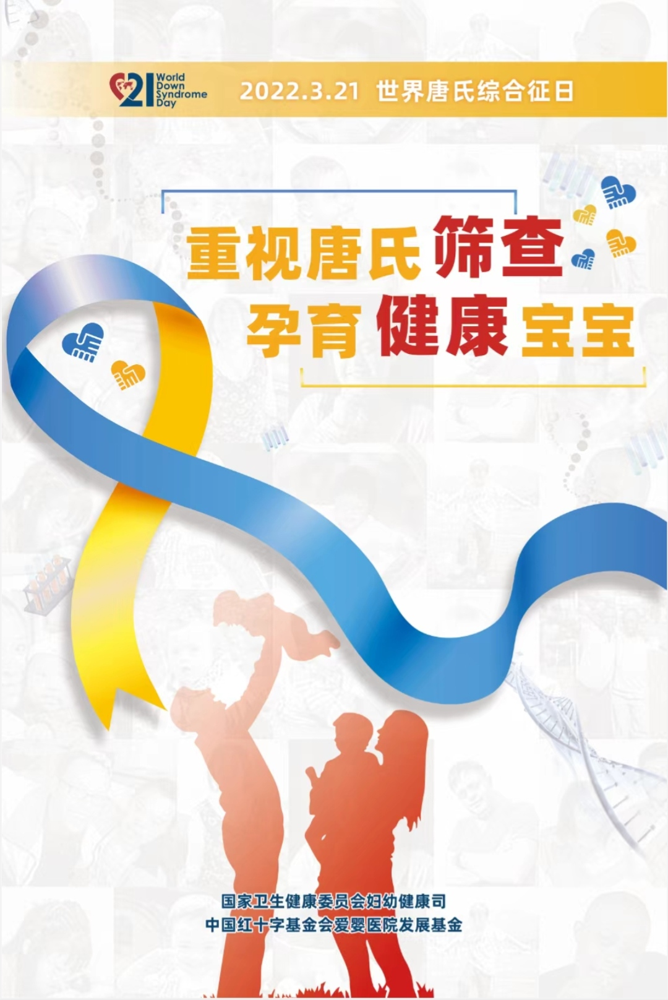
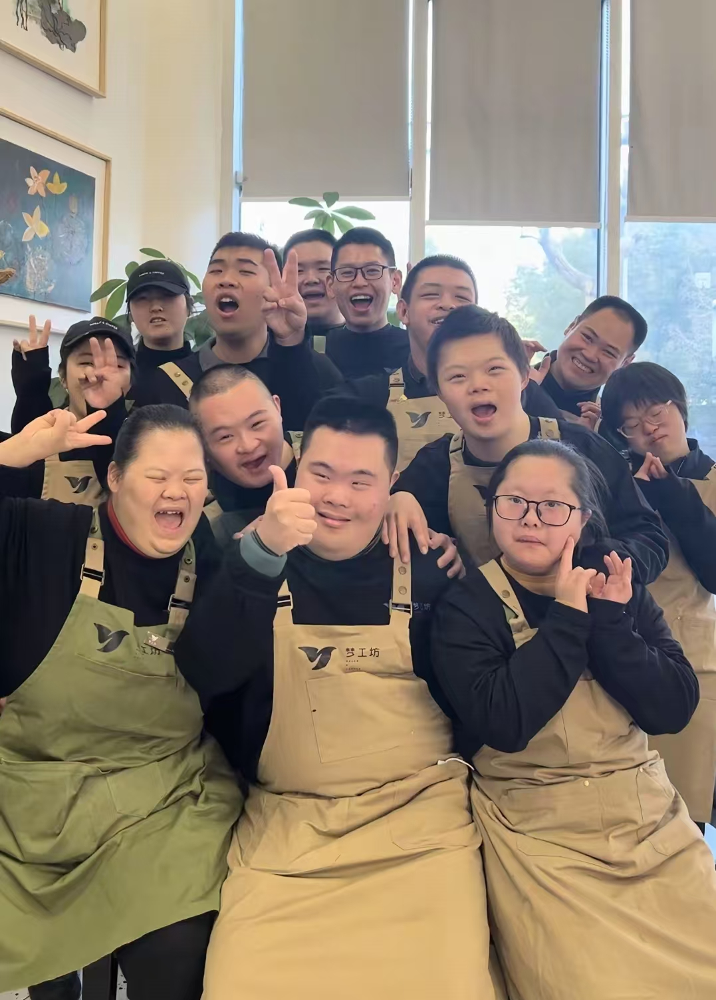

看见唐氏 · 数据新闻
一个唐氏宝宝的命运，
多大程度取决于他生在哪里？
每年约 1.5 万名唐氏宝宝降生（推算值），但他们获得的支持，因省份而天差地别。
代理口径：因唐氏无专项分省统计，以残疾儿童康复机构数据近似代理，非专项统计（依据《残疾人残疾分类和分级》GB/T 26341-2010）。本图为2024 年全国 31 省数据（来源：《中国残疾人事业统计年鉴》表 4-1-2、4-1-4）：康复资源密度 = 康复机构数 ÷ 0–6 岁残疾儿童数，范围 121（海南）～690（山西），上海 4549 为直辖市分母小造成的极值，已按色阶上限显示。悬停省份可查看数值。
什么是唐氏：一段不同的生命旅程
先认识，再讨论。依据国家卫生健康委员会、中国残疾人联合会《唐氏综合征防治健康教育核心信息》。
唐氏综合征又称 21 三体综合征：第 21 号染色体多出一条。1959 年法国学者勒琼首次确认其病因，这也是人类第一个被确认的染色体疾病。患儿有不同程度的智力发育迟缓，约四成至一半合并先天性心脏病。它不是遗传病——超过 90% 为新生染色体异常，与父母基因无关；也无法"治愈"，但早期筛查、康复训练与融合训练能显著改善生活质量。他们更不是"长不大的孩子"——会长大、会工作、会恋爱。每年 3 月 21 日是世界唐氏综合征日。
按发生率与智力残疾人口反推，全国现存唐氏患者约 50 万人（推算值，非官方统计）。
按 1/800～1/600 发生率中值估算：2024 年全国约 954 万出生人口中，唐氏宝宝约 1.2～1.6 万名（推算值；人民日报报道口径"如不及早干预每年约 15000 名"）。为便于识别，最小扇区角度已放大处理，实际占比约 0.16%。
从产检单到养老院，这条路能走多远
把一个唐氏宝宝的一生切成六段：出生、筛查、康复、教育、就业、养老。越往后，能查到的公开数据越稀疏——这不是错觉，而是支持体系真实的样子；而每一环，各省份能接住多少人，完全不同。
各环节数据来自不同年份与口径（出生为发生率推算、筛查率 2023、康复救助 2024、教育口径待核、就业 2024、托养 2025），非同一队列追踪；精确数值以条上标注为准。
第 ① 段 · 出生每年约 1.5 万名唐氏宝宝降生
按 1/800～1/600 发生率、以 2024 年全国约 954 万出生人口计，每年约有 1.5 万名唐氏宝宝降生（推算值）；人民日报报道：如不及早干预，每年约 15000 名。他们中的绝大多数会落入"智力残疾"这一统计类别。
→ 同样的发生率，落在不同省份，命运的分流从这里就开始。第 ② 段 · 筛查三道产前防线，筛查率 91.3%
孕早期血清学筛查（9–13.86 周）、孕中期血清学筛查（15–20.86 周）与无创 DNA 检测（12–22.86 周）构成三道产前防线；2023 年全国产前筛查率已达 91.3%。但筛查不等于确诊——高风险孕妇仍需无创 DNA 或羊膜穿刺确诊。
→ 而这一环，各省份能接住多少人，完全不同。第 ③ 段 · 康复0–6 岁黄金窗口，7.45 万名获救助
2024 年，全国约 7.45 万名 0–6 岁残疾儿童获得康复救助（整体残疾儿童口径，非唐氏专项）；康复环节至今没有"覆盖率"的公开统计——需求有多大、缺口有多深，仍是未知数。
→ 康复机构在哪个省、离家多远，决定了"黄金窗口"是现实还是口号。
干预越早，路越宽
康复救助制度为 0–6 岁儿童提供补贴——前提是，家门口有机构接得住。
第 ④ 段 · 教育义务教育大门开多大
智力残疾儿童正在接受义务教育的比例为 64.86%；而多重残疾儿童仅 40.99%，不足听力残疾儿童（85.05%）的一半。唐氏患儿约四成至一半合并先心病，不少同时被认定为多重残疾——他们正是最容易被落下的人群。
→ 能否顺利入学，很大程度上取决于所在省份的特教资源与随班就读支持。被忽视的少数：多重残疾儿童入学率不足半数（40.99%）；唐氏患儿不少同时被认定为多重残疾——这恰是他们受教育权最薄弱的原因。来源：教育部、中国残联 6–14 岁残疾儿童受教育统计（口径待核）。
第 ⑤ 段 · 就业最大的盲区：辅助性就业 16.47 万
2024 年全国持证残疾人就业 914.35 万人，其中辅助性就业仅 16.47 万，占比不足 2%。唐氏成人就业没有专项统计——这是"看不见的缺口"。
→ 有没有岗位，取决于当地有没有愿意接纳的企业与辅助性就业机构。第 ⑥ 段 · 养老最薄的一环：机构托养 22.9 万
全国重度残疾人约 2518 万。2025 年，进入寄宿制与日间照料机构托养的仅 22.9 万人，另有 52.4 万人接受居家服务——绝大多数照护责任，仍压在家庭肩上。政策托底：《"十四五"阳光家园计划》中央财政按每人每年平均 1500 元补助托养服务，各地可叠加地方财政与慈善资金（如重庆渝中区日间照料每月 200 元、寄宿型每月 600 元）。
→ 晚年由谁照护，取决于所在省份的托养资源——省际差距最大的一环。托养机构数由 2018 年 8435 个增至 2025 年 11210 个；居家托养始终是主体，约为机构内的 2 倍以上。2025 年已竣工托养服务设施 1114 个、建筑面积 340.9 万㎡、总投资 96.4 亿元。来源：中国残联历年《残疾人事业发展统计公报》与第八次全国代表大会报告。
兜底的现状：三组最新数字
资源地图：谁的孩子有地方去
同样的发生率，落在不同省份，命运从这里开始分流。不是他们需不需要被照顾，而是资源在哪里。
以智力残疾儿童与康复服务数据近似代理唐氏群体，非专项统计：依《残疾人残疾分类和分级》（GB/T 26341-2010），唐氏以智力障碍为主要表现，常合并先心病等构成多重残疾。
康复资源密度 = 康复机构数 ÷ 0–6 岁残疾儿童康复救助人数（残联实际服务口径，各省不再单独发布"0–6 岁儿童总数"）；托养资源 暂以托养机构绝对数展示。用相对指标而非机构绝对数看康复缺口——资源洼地才是真问题。
康复密度为已核实 4 省数据（吉林、湖南、陕西、四川，2025 年）；托养机构数为已核实 5 省数据（海南、贵州、陕西、湖南、四川，2025 年）。其余省份待《中国残疾人事业统计年鉴》分省数据补充（康复机构见年鉴"4-1-4"，托养见"4-4-2"，分省重度残疾人数见"3-2"表），查不到的省份如实标注"数据缺失"，绝不用估算值填充。
家/万 0-6 岁残疾儿童：山西 690、吉林 670、黑龙江 669、西藏 651、山东 645 居前；海南 121、宁夏 137、河南 195 靠后。数据来源：《中国残疾人事业统计年鉴 2024》表 4-1-2、4-1-4。
家/万接受康复服务残疾人：广东 57.3、北京 47.0、内蒙古 26.6、新疆 22.8 居前；贵州 3.1、福建 3.4、陕西 4.5、西藏 4.7 靠后。上海 2024 年无独立统计。数据来源：《中国残疾人事业统计年鉴 2024》表 4-4-2。
为什么差这么多
地图上的色差不是偶然。经济、制度、观念与家庭，四股力量叠加出资源洼地。
黄色 = 同等经济水平下康复投入偏高（吉林 GDP 6.49 万却达 670 家/万儿童；山西 7.42 万 / 690；山东 10.26 万 / 645），红色 = 相对资源洼地（河南 6.82 万仅 195；海南 7.71 万仅 121；宁夏 7.80 万仅 137；江苏 16.70 万仅 225）。上海因 0-6 岁儿童基数小（2053 人）导致密度 4549，为极值未入图。数据来源：《中国残疾人事业统计年鉴 2024》表 4-1-2/4-1-4 与各省 2025 年统计公报（人均 GDP）。
第一层 · 经济水平康复是地方财政的函数
康复机构主要依靠地方财政投入与医保补贴运转。经济发达省份财政充裕、社会组织密集，机构数量与专业程度都更高；欠发达地区投入有限，缺口由此拉开。
数据依据：上方散点图显示人均 GDP 与康复资源密度整体正相关，但存在明显偏离趋势线的省份。第二层 · 制度覆盖县一级的"最后一公里"
全国残疾人就业服务中心约 35366 个，但分布并不均衡：不少县没有定点康复与托养机构，家庭必须跨市甚至跨省求康复，"黄金窗口"耗在路上。
数据依据：中国残联统计，就业服务中心 35366 个；县域分布无公开分县数据，待补充。第三层 · 建档观念"看不见"不等于"不存在"
检出与建档率低的地方，数据里的"稀少"有时并非人口少，而是未被登记。不建档就拿不到救助与学位——数字的洼地，会进一步变成资源的洼地。
数据依据：康复环节缺乏"覆盖率"口径——2024 年约 7.45 万名 0–6 岁儿童获救助，需求总量无公开数字。第四层 · 家庭压力照护的主体是家庭
2025 年接受居家服务 52.4 万人，进入机构托养的仅 22.9 万人——大部分照护责任压在家庭身上。当父母老去，"双老家庭"的托养衔接是最薄的一环。
数据依据：2025 年《残疾人事业发展统计公报》（居家 52.4 万 vs 机构 22.9 万）。谁在发光
数据勾勒缺口，故事照见个体。三个真实的唐氏青年，与三层正在补缺口的力量。

李凤琳 · 最多变换 13 张脸谱
6 个月大时确诊唐氏。17 岁拜师学变脸，一个动作反复练上百遍，一年半后首次登台，最多变换 13 张脸谱，还学会吐火。多次登上央视舞台，被称为国内唐氏川剧变脸第一人。
来源：四川观察等公开报道
回应的缺口：职业培训与艺术就业。

殷秋华 · 从"终身瘫痪"预判到赛场金牌
出生时医生曾预判她大概率终身瘫痪。14 岁看到游泳眼里有了光，58 岁的母亲自学动作再手把手教她。2022 年四川省残运会夺游泳金牌，2026 年再获五枚银牌。
来源：公开媒体报道
回应的缺口：教育与体育参与。

李想 · 特奥赛场上追光的少年
受李小鹏探访鼓舞立志站上体操赛场，同一动作成千上万次重复。2015 年洛杉矶世界特奥会 1 金 2 银 2 铜；2019 年阿布扎比再夺 2 金 4 银 1 铜，并把心愿纸条送给偶像李小鹏。
来源：公开媒体报道
回应的缺口：融合教育与专业训练。
筛查窗口已明确，康复救助有托底
三道产前防线构成产检保障；2023 年全国产前筛查率达 91.3%。残疾儿童康复救助制度为 0–6 岁儿童提供补贴，2024 年约 7.45 万名获救助。
回应的缺口：筛查与早期康复家长组织与线上社区，抱团取暖
各地唐氏家长组织提供信息支持、康复经验、政策倡导与心理互助。短视频平台"一群快乐的宝（梦工坊咖啡吧）"等账号记录心智障碍青年工作日常，获赞 28 万。
回应的缺口：教育与社会支持"有光岗位"：劳动尊严看得见
上海浦东梦工坊咖啡吧专门为心智障碍青年提供咖啡师岗位。2024 年全国持证残疾人就业 914.35 万，辅助性就业岗位仅 16.47 万个——有场所、缺岗位，正是就业环节的真实矛盾。
回应的缺口：就业（支持性岗位）
政策侧 · 卫健委宣传海报
国家卫健委妇幼健康司、中国红十字基金会爱婴医院发展基金共同发布："重视唐氏筛查，孕育健康宝宝"。

社会企业 · 梦工坊咖啡吧
上海浦东齐河路 508 号，一群心智障碍青年在这里做咖啡、迎客人，用劳动赢得尊重。
看见之后，可以做什么
左栏是前文看见的缺口，右栏是对应的建议——一一对应，不再空泛。
康复：覆盖面成谜
2024 年约 7.45 万名 0–6 岁儿童获救助，需求总量无公开口径；分省康复密度悬殊，"知道但够不着"。
把救助送进资源洼地
强化 0–6 岁康复救助的覆盖面与可及性，向康复资源密度低的省份倾斜布点与转介机制。
教育：最后一公里失守
智力残疾义务教育比例 64.86%，多重残疾仅 40.99%——随班就读支持资源决定入学能否持续。
补齐随班就读支持
扩大特教教师、影子老师与家长参与机制，让"进了校门"变成"坐得住、学得下"。
就业：看不见的缺口
2024 年辅助性就业仅 16.47 万人，占持证就业不足 2%；唐氏成人就业无专项统计。
打开有光的出口
发展职业培训与支持性就业岗位——《关于发展残疾人辅助性就业的意见》（残联发〔2015〕27 号）已给出政策依据。
养老：重担压在家庭
重度残疾人约 2518 万，2025 年机构托养仅 22.9 万人、居家服务 52.4 万人——越往后越需要提前规划。
衔接"双老家庭"的明天
建立成年后托养、监护与社区照护的衔接机制，让父母老去之前，答案已经就位。
你的行动清单
勾选你愿意做的（演示交互，勾选状态不保存）
把话留在这里
「唐氏综合征」相关评论高频词
字号越大，出现越频繁
留言区
你身边有唐氏儿童或家庭吗？你有什么想说的？
演示版：留言仅在本地模拟，不会真正存储。
公益科普小贴士
- 唐氏综合征不是"罕见病"，它是最常见的染色体异常之一。
- 产前筛查是选择，不是评判——请尊重每个家庭的决定。
- 称呼上使用"唐氏人士 / 唐氏儿童"，避免歧视性用语。
- 3 月 21 日世界唐氏综合征日，蓝黄相间的爱心丝带是它的标志。
- 帮助之前先问："你需要什么？"而不是"我帮你做"。
数据来源
参考文献（数据来源）
- 国家卫生健康委员会、中国残疾人联合会. 唐氏综合征防治健康教育核心信息[EB/OL].（发生率 1/800～1/600）.
- 国家统计局. 中华人民共和国2024年国民经济和社会发展统计公报[R]. 2025.（2024 年全国出生人口约 954 万人）.
- 国家标准化管理委员会、中国残疾人联合会. 残疾人残疾分类和分级: GB/T 26341-2010[S]. 2010.（唐氏归入智力残疾的分类依据）.
- 国家卫生健康委办公厅. 关于进一步加强产前筛查服务管理的通知解读[EB/OL]. 妇幼健康司, 2025-04-21.（2023 年全国产前筛查率 91.3%）.
- 中国残疾人联合会. 2025年残疾人事业发展统计公报[R]. 2026-04-29.（托养机构 11210 个、机构内托养 22.9 万、居家托养 52.4 万、参保缴费资助重度残疾 708.3 万、已竣工托养服务设施 1114 个）.
- 中国残疾人联合会. 历年残疾人事业发展统计公报及第八次全国代表大会报告[R].（托养机构 2018 年 8435 个、2022 年 8906 个、2024 年 10004 个；辅助性就业 16.47 万；就业服务中心 35366 个；0–6 岁康复救助 7.45 万）.
- 教育部、中国残联. 6–14 岁残疾儿童少年义务教育入学统计[R].（64.86%／40.99% 等）.
- 人民日报客户端. 第 14 个世界唐氏综合征日报道[N]. 2025-03-21.（每年约 15000 名唐氏患儿）.
- 中国残联等五部门. 关于发展残疾人辅助性就业的意见: 残联发〔2015〕27号[Z]. 2015.
- 中国政府网. "十四五"阳光家园计划实施方案[Z]. 2021-09-10.（中央财政补助每人每年平均 1500 元）；国务院办公厅. 关于加强重度残疾人托养照护服务的意见[Z]. 2025-07-28.
- 中国残疾人联合会. 中国残疾人事业统计年鉴 2024[M]. 表 4-1-2（残疾人接受基本康复服务：合计 866.8 万人、0-6 岁残疾儿童 36.9 万人）、表 4-1-4（康复机构 13297 个，分省）、表 4-4-2（托养机构 10004 个，分省）、表 4-11-3（已竣工托养设施 1097 个/336.9 万㎡/96.28 亿元）.
- 各省人民政府/统计局. 2025 年国民经济和社会发展统计公报[R]. 2026.（2025 年分省人均 GDP）.
- 小红书. "唐氏综合征""糖宝"相关笔记评论区公开评论[N/OL]. 采集时间 2026-10-23.
- 四川观察等公开报道. 李凤琳（川剧变脸）、殷秋华（游泳）、李想（体操）真实案例报道[N].
生于21号，
人生不止童年
每一个 1/700 的背后，都有一个完整而具体的家庭。数据让我们看见规模，故事让我们看见人。
如果你读到了这里，请记住：他们不需要同情，需要的是机会与陪伴。